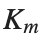
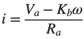
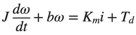
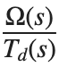
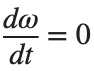

Control Engineering 1 · Week 10 · DC Motor의 Disturbance Rejection
본인 사본에서 코드와 작성란을 직접 수정하세요. 이름: ⟦직접 입력⟧ / 학번: ⟦직접 입력⟧
실행 방법
Live Editor에서 코드 안을 클릭하고 Run Section으로 현재 Section을 실행하세요(Windows/Linux Ctrl+Enter, Mac ⌘+Enter). Run은 문서 전체를 실행합니다. 설명·작성란은 직접 편집하세요.
처음에는 위에서부터 실행하고, 값을 바꾼 Section은 다시 실행하세요. 변수가 없다는 오류가 나면 앞 Section부터 실행하세요. 출력은 코드 아래 또는 오른쪽에 표시됩니다.
환경: MATLAB Online과 Control System Toolbox.
1. 모델 유도와 Gain 계산
- (input): Disturbance Torque.
- ω (output): 운전점에서의 Angular Velocity Deviation [rad/s].
 : Armature Voltage 변화.
: Armature Voltage 변화.- i: Armature Current 변화.
- 모델 가정: Armature Inductance 무시.
기호 | 뜻 | 값 |
Armature Resistance | 1 | |
 | Torque Constant | 0.1 |
Back EMF Constant | 0.1 | |
J | Moment of Inertia | 0.01 |
b | Viscous Friction Coefficient | 0.001 |
Tachometer Gain | 0.05 |
모터 식:


- 의 식을 전류 i의 식에 대입하세요. 이어서 구한 i의 식을 운동방정식에 대입하고, ω와
 사이의 미분방정식으로 정리하세요.
사이의 미분방정식으로 정리하세요. - Initial Condition을 0으로 놓고 이 미분방정식을 Laplace Transform하세요. 가 포함된 항을 한쪽으로 모은 뒤

를 구하세요. - 직접 구한 분자·분모 계수를 뒤의 Tachometer Feedback Section의 Gc 계수와 같은 차수 순서로 적어 대조하세요.
구할 값: 허용조건을 만족하는 최소 Amplifier Gain.
- 일정한 Disturbance: .
- Steady State 허용조건: rad/s.
- Amplifier Gain 범위:
 .
. - 모터 계수: 위 표의 값.
- 앞에서 구한 미분방정식에 ,

, 를 대입하세요. 에 곱해진 계수로 양변을 나누어, 를
를  의 함수로 나타내세요.
의 함수로 나타내세요. - 그 식을 허용조건 에 대입하세요.
 , 와 표의 모터 계수를 넣고, 조건을 만족하는
, 와 표의 모터 계수를 넣고, 조건을 만족하는  의 범위를 구하세요.
의 범위를 구하세요. - 구한 범위에서 가장 작은 값을
 으로 기록하세요. 결과에는
으로 기록하세요. 결과에는  의 식, 수치를 대입한 부등식,
의 식, 수치를 대입한 부등식,  의 허용 범위와 최소값이 보이게 적으세요. 이후 MATLAB 계산과 비교할 때 이 기록을 사용합니다.
의 허용 범위와 최소값이 보이게 적으세요. 이후 MATLAB 계산과 비교할 때 이 기록을 사용합니다.
코드 실행 전 — 손으로 계산한 식과 값: ⟦여기에 계산을 적으세요⟧
코드 실행 후 — 비교할 MATLAB 출력값: ⟦출력값을 적으세요⟧
2. Open-loop Disturbance Step Response
Ra=1,Km=Kb=0.1,J=0.01,b=0.001 기준입니다.
실행 전 예상: ⟦직접 입력⟧
Ra=1;Km=.1;Kb=.1;J=.01;b=.001;D=.2;
Gd=tf(1,[J b+Km*Kb/Ra]);
finalValue=D*dcgain(Gd);disp(finalValue);
figure;step(D*Gd,0:.01:8);grid on;
직접 수행:
‘Open-loop Disturbance Step Response’ 코드에 정의된 Gd=tf(1,[J b+Km*Kb/Ra])를 사용하세요. Ra,Km,Kb,J,b는 그 코드에 정의된 값을 유지합니다.
조건 | D |
1 | 0.1 |
2 | 0.2 |
3 | 0.3 |
- 각 조건의
 [rad/s]를 계산하세요.
[rad/s]를 계산하세요. - 한 표에 다음 세 열을 기록하세요.
- D
 [rad/s]
[rad/s]
- 세 행의
 를 대조하세요. 비율이 일정한지와, 그 결과가 D와
를 대조하세요. 비율이 일정한지와, 그 결과가 D와  의 비례 관계를 어떻게 보여 주는지 적으세요.
의 비례 관계를 어떻게 보여 주는지 적으세요.
% ✍ 직접 작성: 아래에 본인 코드를 추가하세요.
바꾼 조건: ⟦직접 입력⟧
실제 결과: ⟦직접 입력⟧
예상과 차이 및 원인: ⟦직접 입력⟧
3. Tachometer Feedback에 따른 Disturbance Rejection
양의 Disturbance 방향을 기준으로 합니다.
실행 전 예상: ⟦직접 입력⟧
Ra=1;Km=.1;Kb=.1;J=.01;b=.001;Kt=.05;D=.2;Ka=20;
Go=tf(1,[J b+Km*Kb/Ra]);Gc=tf(1,[J b+Km/Ra*(Kt*Ka+Kb)]);
figure;step(D*Go,D*Gc,0:.005:8);legend('Open-loop disturbance','Feedback disturbance');grid on;
disp([D*dcgain(Go),D*dcgain(Gc)]);
직접 수행:
‘Tachometer Feedback에 따른 Disturbance Rejection’ 코드의 Ra,Km,Kb,J,b,Kt와  는 그대로 두고,
는 그대로 두고,  만 바꿉니다.
만 바꿉니다.
조건 | |
1 | 10 |
2 | 20 |
3 | 40 |
- 각
 에서 Gc를 다시 만들고 dcgain(Gc)를 구하세요.
에서 Gc를 다시 만들고 dcgain(Gc)를 구하세요. - 각 DC Gain에 D를 곱해
 [rad/s]를 구하세요.
[rad/s]를 구하세요.  , DC Gain,
, DC Gain,  를 세 열로 기록하세요.
를 세 열로 기록하세요.
% ✍ 직접 작성: 아래에 본인 코드를 추가하세요.
바꾼 조건: ⟦직접 입력⟧
실제 결과: ⟦직접 입력⟧
예상과 차이 및 원인: ⟦직접 입력⟧
4. Amplifier Gain 설계
Ka에 소수를 허용하면 계산한 최소값을 사용합니다. 정수만 허용한다면 그 값보다 작지 않은 가장 작은 정수를 사용하세요.
실행 전 예상: ⟦직접 입력⟧
Ra=1;Km=.1;Kb=.1;b=.001;Kt=.05;D=.2;limit=.5;
Ka_min=max(0,(abs(D)/limit-b-Km*Kb/Ra)/(Km*Kt/Ra));
disp([Ka_min,ceil(Ka_min)]);
직접 수행:
직전 활동에서 사용한  와 모터 계수는 유지합니다. 아래 두 허용값을 각각 적용하세요.
와 모터 계수는 유지합니다. 아래 두 허용값을 각각 적용하세요.
- 먼저 손계산에 사용한
 , limit=0.5로 최소 Gain을 계산하세요. ‘Amplifier Gain 설계’ 코드의 Ka_min은 을 계산한 값입니다. 이 출력과 활동 1에서 손으로 구한 값을 나란히 기록하세요.
, limit=0.5로 최소 Gain을 계산하세요. ‘Amplifier Gain 설계’ 코드의 Ka_min은 을 계산한 값입니다. 이 출력과 활동 1에서 손으로 구한 값을 나란히 기록하세요. - 각 limit에서 최소 를 계산하세요. 계산 결과 은 코드의 Ka_min에 해당하며, 소수 Gain을 허용합니다.
조건 | limit [rad/s] |
1 | 0.25 |
2 | 1 |
- 구한 최소값보다 조금 작은
 와 큰
와 큰  를 하나씩 고르세요. 예: , .
를 하나씩 고르세요. 예: , . - 각 Gain을 Feedback 모델 Gc에 넣어 모델을 다시 만들고, 를 구하세요.
- 조건별 계산 결과를 한 표에 남기세요.
허용값 [rad/s] | limit |
계산한 최소 Gain | |
모델에 적용한 Gain | |
정상상태 Angular Velocity Deviation [rad/s] | |
허용값 충족 여부 | 의 참/거짓 |
- 최소값보다 작은 Gain과 큰 Gain에서 허용값 충족 여부가 어떻게 달라지는지 적으세요. 계산한 최소값이 두 경우를 나누는 경계인지 이 표로 판단합니다.
% ✍ 직접 작성: 아래에 본인 코드를 추가하세요.
바꾼 조건: ⟦직접 입력⟧
실제 결과: ⟦직접 입력⟧
예상과 차이 및 원인: ⟦직접 입력⟧
반복 숙달과 제출 전 확인
앞의 직접 수행에서 비교한 조건 세 가지를 아래에 정리하세요. 이미 수행한 실험을 추가로 반복할 필요는 없습니다. 예상은 정확한 수치 대신 증가·감소 방향으로 적어도 됩니다.
반복 1 — 조건: ⟦직접 입력⟧ / 예상: ⟦직접 입력⟧ / 실제: ⟦직접 입력⟧
반복 2 — 조건: ⟦직접 입력⟧ / 예상: ⟦직접 입력⟧ / 실제: ⟦직접 입력⟧
반복 3 — 조건: ⟦직접 입력⟧ / 예상: ⟦직접 입력⟧ / 실제: ⟦직접 입력⟧
선택:
예: 마지막 시뮬레이션 표본을 정상상태 값으로 판단한 경우
- 모터 계수 Ra,Km,Kb,J,b,Kt는 앞 활동의 값을 유지하세요. Ka=20, D=0.2를 지정하고 Gc=tf(1,[J b+Km/Ra*(Kt*Ka+Kb)])를 만든 뒤, step(D*Gc,0:0.005:0.05)의 마지막 값을 구하세요.
- 그 값을 D*dcgain(Gc)와 나란히 적고 차이를 구하세요. 0.05 s에서 충분히 수렴했다고 볼 수 있는지 판단하세요.
- 같은 Gc에 대해 종료 시간을 0.05 s에서 8 s로 늘리고, 시간 간격은 0.005 s로 유지하세요. [y_long,t_long]=step(D*Gc,0:0.005:8)을 실행한 뒤, y_long(end)와 D*dcgain(Gc)의 차이를 구하세요. 앞서 구한 0.05 s의 차이와 대조하세요.
코드, 실제 Output·그래프, 직접 작성한 해석을 포함하세요. 제출은 KLAS를 이용하며 기한은 학기 일정과 최신 공지를 확인합니다.
파일명: 이름_학번_10주차.mlx.